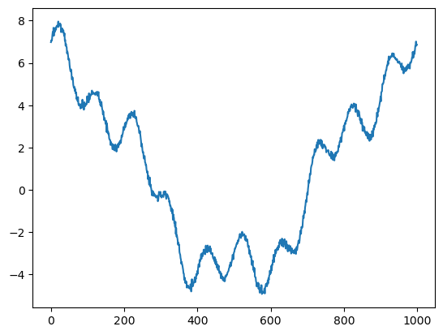

Discrete Fourier Transform#
import numpy as np
from matplotlib import pyplot as plt
def fourier(y, number_of_harmonics):
x = np.matrix(np.arange(0,np.size(y)))/np.size(y)*2*3.14159
#
#print(x)
n = np.matrix(np.arange(0,number_of_harmonics))
omega = x.T.dot(n)
cos_coef = np.matrix(y).dot(np.cos(omega))
sin_coef = np.matrix(y).dot(np.sin(omega))
cos_coef = cos_coef/np.size(y)*2
sin_coef = sin_coef/np.size(y)*2
cos_coef[0,0] = cos_coef[0,0]/2
reconstruct = cos_coef.dot(np.cos(omega).T)+sin_coef.dot(np.sin(omega).T)
return cos_coef,sin_coef, reconstruct, omega
x = np.linspace(0,2*3.14159,1000)
y = 1*np.cos(0*x)+5*np.cos(x)+np.cos(4*x)+np.sin(10*x)+np.random.normal(0,0.1,1000)
plt.plot(y)
wave_number = 100
cos_coef,sin_coef,reconstruct, omega = fourier(y,wave_number)
plt.figure()
plt.contourf(np.cos(omega))
# plt.scatter(np.arange(0,wave_number),np.array(cos_coef),s=40)
# plt.scatter(np.arange(0,wave_number),np.array(sin_coef),s=40)
plt.figure()
plt.plot(reconstruct[0,:].T)
plt.plot(y)
print('cos coef=',cos_coef)
print('sin coef=',sin_coef)
plt.figure()
plt.plot(cos_coef)
cos coef= [[ 1.00303373e+00 5.01353809e+00 1.55030505e-04 -6.22377507e-03
1.00394267e+00 -7.65569122e-03 -8.97790539e-04 -3.93817902e-03
1.97860949e-04 2.95547124e-03 2.81943937e-02 5.97394148e-04
-3.87976534e-03 1.32901611e-03 -1.12296053e-03 1.99480552e-03
-3.35405747e-03 -8.86705062e-04 -8.15626015e-03 -8.24447112e-03
2.80735774e-03 -8.94134869e-03 2.71998177e-03 -4.29286550e-03
-2.85411015e-03 9.64529992e-04 6.16503604e-03 -3.65500474e-03
-5.83188780e-04 1.07866274e-02 -6.84104088e-04 2.53969886e-03
-4.64073626e-04 -6.69134872e-04 3.92430919e-03 3.94350530e-03
-1.29259449e-02 1.22970100e-03 2.99500767e-03 5.13221476e-03
-6.13479933e-03 2.84172442e-03 1.38584084e-03 -3.62858020e-03
9.62107993e-03 3.83944098e-03 5.23120450e-03 9.36828779e-04
-3.16205206e-03 -1.89267313e-03 -2.19877421e-03 -9.28300719e-05
-4.25408927e-03 -1.50272220e-04 3.60443507e-03 -7.06617770e-03
6.99585637e-03 -3.81284419e-03 -1.86536117e-03 -1.77094815e-03
2.21565565e-03 1.58792272e-03 -6.14425212e-04 -3.12888518e-05
2.24513838e-03 1.34045393e-03 -2.35162142e-03 -7.84797043e-04
-7.30553245e-03 -1.39405118e-03 3.04042762e-03 2.40940390e-03
-3.36652760e-04 -8.12580359e-03 9.95429241e-04 1.83256181e-03
-7.04538381e-03 4.94405994e-04 5.58963615e-03 -6.88811891e-03
4.97940371e-05 5.95288612e-03 -2.12903730e-03 -3.79153150e-03
-2.05614590e-03 -1.72407183e-03 4.18627396e-03 3.39831265e-03
-3.45896723e-03 4.80020980e-04 3.09741635e-03 1.54295862e-03
-8.11816823e-04 -1.09835458e-02 6.16070211e-03 2.66151648e-03
-1.06035090e-02 -3.66996557e-03 -1.06886335e-02 3.99544470e-03]]
sin coef= [[ 0.00000000e+00 -1.95457624e-02 -2.54256360e-03 3.35652329e-04
-1.40305501e-02 5.93407692e-03 2.79767455e-03 4.74057938e-03
8.31291331e-03 9.39659626e-03 1.00332362e+00 -1.28769765e-02
-2.07391307e-03 -2.00132351e-03 -8.57286506e-03 -2.86405123e-03
1.85438071e-03 -6.09881557e-04 -4.27031294e-04 -5.18577877e-03
1.01418404e-03 2.23878335e-03 -4.78112747e-03 4.97499166e-03
-4.29703400e-03 2.71242843e-04 -7.14476397e-03 7.04156366e-03
-3.94424095e-03 -3.07847088e-03 -8.64372156e-03 -2.36718127e-04
3.22361008e-03 2.28393295e-03 -9.46383231e-04 6.48850837e-03
-2.93085414e-04 4.53666470e-03 1.10373299e-03 -1.78074477e-03
1.04715766e-02 -1.25041724e-03 6.13694577e-03 -5.81813321e-03
-3.93100822e-03 -1.85592569e-03 -1.71288346e-03 -1.74464356e-04
4.80449011e-03 -1.78789324e-03 -2.88484539e-03 6.95778069e-03
-2.26575776e-03 -4.20054031e-03 -1.98877537e-03 2.81358556e-03
-2.55027600e-03 -3.48376003e-03 9.08910340e-03 2.11341092e-03
4.13307736e-03 2.26949476e-03 8.11307788e-03 5.55223841e-03
2.62640456e-03 -4.08815477e-03 -2.10730715e-03 4.20219086e-03
-2.72463668e-03 -3.23086636e-03 -5.25480931e-03 1.71121367e-03
6.34101812e-03 -1.32260613e-04 5.40711242e-03 3.11922927e-03
-8.51260278e-03 -1.16204531e-02 -4.70798075e-03 -4.32922624e-03
-3.36305969e-03 -6.23107747e-04 4.16837398e-03 -4.50961550e-03
-2.88820438e-03 -1.50441596e-03 -1.24069315e-03 -1.88598281e-03
6.96217655e-04 -1.78697764e-03 -4.11262360e-03 1.36994088e-04
1.70589014e-03 3.93190905e-05 5.49451094e-03 -6.61550120e-03
-5.23099042e-03 -2.59333316e-03 3.98526931e-03 -3.19493881e-03]]
[<matplotlib.lines.Line2D at 0x11f65d940>,
<matplotlib.lines.Line2D at 0x11f65da60>,
<matplotlib.lines.Line2D at 0x11f65db80>,
<matplotlib.lines.Line2D at 0x11f65dca0>,
<matplotlib.lines.Line2D at 0x11f65ddc0>,
<matplotlib.lines.Line2D at 0x11f65dee0>,
<matplotlib.lines.Line2D at 0x11f65d8e0>,
<matplotlib.lines.Line2D at 0x11f669160>,
<matplotlib.lines.Line2D at 0x11f669280>,
<matplotlib.lines.Line2D at 0x11f6693a0>,
<matplotlib.lines.Line2D at 0x11f6694c0>,
<matplotlib.lines.Line2D at 0x11f6695e0>,
<matplotlib.lines.Line2D at 0x11f669700>,
<matplotlib.lines.Line2D at 0x11f669820>,
<matplotlib.lines.Line2D at 0x11f669940>,
<matplotlib.lines.Line2D at 0x11f669a60>,
<matplotlib.lines.Line2D at 0x11f669b80>,
<matplotlib.lines.Line2D at 0x11f669ca0>,
<matplotlib.lines.Line2D at 0x11f669dc0>,
<matplotlib.lines.Line2D at 0x11f669ee0>,
<matplotlib.lines.Line2D at 0x11f669040>,
<matplotlib.lines.Line2D at 0x11f671160>,
<matplotlib.lines.Line2D at 0x11f671280>,
<matplotlib.lines.Line2D at 0x11f6713a0>,
<matplotlib.lines.Line2D at 0x11f6714c0>,
<matplotlib.lines.Line2D at 0x11f6715e0>,
<matplotlib.lines.Line2D at 0x11f671700>,
<matplotlib.lines.Line2D at 0x11f671820>,
<matplotlib.lines.Line2D at 0x11f671940>,
<matplotlib.lines.Line2D at 0x11f671a60>,
<matplotlib.lines.Line2D at 0x11f671b80>,
<matplotlib.lines.Line2D at 0x11f671ca0>,
<matplotlib.lines.Line2D at 0x11f671dc0>,
<matplotlib.lines.Line2D at 0x11f671ee0>,
<matplotlib.lines.Line2D at 0x11f671040>,
<matplotlib.lines.Line2D at 0x11f79f160>,
<matplotlib.lines.Line2D at 0x11f79f280>,
<matplotlib.lines.Line2D at 0x11f79f3a0>,
<matplotlib.lines.Line2D at 0x11f79f4c0>,
<matplotlib.lines.Line2D at 0x11f79f5e0>,
<matplotlib.lines.Line2D at 0x11f79f700>,
<matplotlib.lines.Line2D at 0x11f79f7f0>,
<matplotlib.lines.Line2D at 0x11f79f910>,
<matplotlib.lines.Line2D at 0x11f79fa30>,
<matplotlib.lines.Line2D at 0x11f79fb50>,
<matplotlib.lines.Line2D at 0x11f79fc70>,
<matplotlib.lines.Line2D at 0x11f79fd90>,
<matplotlib.lines.Line2D at 0x11f79feb0>,
<matplotlib.lines.Line2D at 0x11f79ffd0>,
<matplotlib.lines.Line2D at 0x11f79f040>,
<matplotlib.lines.Line2D at 0x11f7a7250>,
<matplotlib.lines.Line2D at 0x11f7a7370>,
<matplotlib.lines.Line2D at 0x11f7a7490>,
<matplotlib.lines.Line2D at 0x11f7a75b0>,
<matplotlib.lines.Line2D at 0x11f7a76d0>,
<matplotlib.lines.Line2D at 0x11f7a77f0>,
<matplotlib.lines.Line2D at 0x11f7a7910>,
<matplotlib.lines.Line2D at 0x11f7a7a30>,
<matplotlib.lines.Line2D at 0x11f7a7b50>,
<matplotlib.lines.Line2D at 0x11f7a7c70>,
<matplotlib.lines.Line2D at 0x11f7a7d90>,
<matplotlib.lines.Line2D at 0x11f7a7eb0>,
<matplotlib.lines.Line2D at 0x11f7a7fd0>,
<matplotlib.lines.Line2D at 0x11f7a7130>,
<matplotlib.lines.Line2D at 0x11f7b1250>,
<matplotlib.lines.Line2D at 0x11f7b1370>,
<matplotlib.lines.Line2D at 0x11f7b1490>,
<matplotlib.lines.Line2D at 0x11f7b15b0>,
<matplotlib.lines.Line2D at 0x11f7b16d0>,
<matplotlib.lines.Line2D at 0x11f7b17f0>,
<matplotlib.lines.Line2D at 0x11f7b1910>,
<matplotlib.lines.Line2D at 0x11f7b1a30>,
<matplotlib.lines.Line2D at 0x11f7b1b50>,
<matplotlib.lines.Line2D at 0x11f7b1c70>,
<matplotlib.lines.Line2D at 0x11f7b1d90>,
<matplotlib.lines.Line2D at 0x11f7b1eb0>,
<matplotlib.lines.Line2D at 0x11f7b1fd0>,
<matplotlib.lines.Line2D at 0x11f7b1130>,
<matplotlib.lines.Line2D at 0x11f64e9d0>,
<matplotlib.lines.Line2D at 0x11f7b6250>,
<matplotlib.lines.Line2D at 0x11f7b6370>,
<matplotlib.lines.Line2D at 0x11f7b6490>,
<matplotlib.lines.Line2D at 0x11f7b65b0>,
<matplotlib.lines.Line2D at 0x11f7b66d0>,
<matplotlib.lines.Line2D at 0x11f7b67f0>,
<matplotlib.lines.Line2D at 0x11f7b6910>,
<matplotlib.lines.Line2D at 0x11f7b6a30>,
<matplotlib.lines.Line2D at 0x11f7b6b50>,
<matplotlib.lines.Line2D at 0x11f7b6c70>,
<matplotlib.lines.Line2D at 0x11f7b6d90>,
<matplotlib.lines.Line2D at 0x11f7b6eb0>,
<matplotlib.lines.Line2D at 0x11f7b6fd0>,
<matplotlib.lines.Line2D at 0x11f7b6130>,
<matplotlib.lines.Line2D at 0x11f7bd250>,
<matplotlib.lines.Line2D at 0x11f7bd370>,
<matplotlib.lines.Line2D at 0x11f7bd490>,
<matplotlib.lines.Line2D at 0x11f7bd5b0>,
<matplotlib.lines.Line2D at 0x11f7bd6d0>,
<matplotlib.lines.Line2D at 0x11f7bd7f0>,
<matplotlib.lines.Line2D at 0x11f7bd910>]


def dft(y):
y = np.asarray(y, dtype=float)
N = y.shape[0]
n = np.arange(N)
k = n.reshape((N, 1))
M = np.exp(-2j * np.pi * k * n / N)
return np.dot(M, y)/np.size(y)
plt.plot(dft(y))
y_hat = np.matrix(dft(y))
print(y_hat.dot((y_hat.conjugate()).T))
print(np.var(y))
[[14.59208872+0.j]]
13.586012061328278
/Users/Shared/miniconda3/envs/jupyterbook/lib/python3.9/site-packages/matplotlib/cbook.py:1762: ComplexWarning: Casting complex values to real discards the imaginary part
return math.isfinite(val)
/Users/Shared/miniconda3/envs/jupyterbook/lib/python3.9/site-packages/matplotlib/cbook.py:1398: ComplexWarning: Casting complex values to real discards the imaginary part
return np.asarray(x, float)
Gibbs phenomenon#
y = np.cos(0*x)+5*np.cos(x)+np.cos(4*x)+np.sin(10*x)
plt.plot(dft(y)[0:10],'k')
# maskout the data by half
y[0:500] = 0
plt.plot(dft(y)[0:10]*2)
[<matplotlib.lines.Line2D at 0x11fdd5a30>]

Fast Fourier Transform#
import numpy as np
def fft(x):
N = len(x)
if N <= 1:
return x
even = fft(x[0::2])
odd = fft(x[1::2])
T = [np.exp(-2j * np.pi * k / N) * odd[k] for k in range(N // 2)]
return [even[k] + T[k] for k in range(N // 2)] + \
[even[k] - T[k] for k in range(N // 2)]
def fft_recursive(x):
N = len(x)
if N % 2 > 0:
raise ValueError("Length of input must be a power of 2")
elif N <= 32:
return fft(x)
else:
even = fft_recursive(x[0::2])
odd = fft_recursive(x[1::2])
T = [np.exp(-2j * np.pi * k / N) * odd[k] for k in range(N // 2)]
return [even[k] + T[k] for k in range(N // 2)] + \
[even[k] - T[k] for k in range(N // 2)]
def main():
x = np.random.random(1024)
#print("Input sequence:", x)
y = fft_recursive(x)
#print("FFT result:", y)
if __name__ == "__main__":
main()
def FFT(x):
"""
A recursive implementation of
the 1D Cooley-Tukey FFT, the
input should have a length of
power of 2.
"""
N = len(x)
if N == 1:
return x
else:
X_even = FFT(x[::2])
X_odd = FFT(x[1::2])
factor = np.exp(-2j*np.pi*np.arange(N)/ N)
X = np.concatenate(\
[X_even+factor[:int(N/2)]*X_odd,
X_even+factor[int(N/2):]*X_odd])
return X
# sampling rate
sr = 128
# sampling interval
ts = 1.0/sr
t = np.arange(0,1,ts)
freq = 1.
x = 3*np.sin(2*np.pi*freq*t)
freq = 4
x += np.sin(2*np.pi*freq*t)
freq = 7
x += 0.5* np.sin(2*np.pi*freq*t)
plt.figure(figsize = (8, 6))
plt.plot(t, x, 'r')
plt.ylabel('Amplitude')
plt.show()

%timeit X=FFT(x)
%timeit dft(x)
# calculate the frequency
N = len(X)
n = np.arange(N)
T = N/sr
freq = n/T
plt.figure(figsize = (12, 6))
plt.subplot(121)
plt.stem(freq, abs(X), 'b', \
markerfmt=" ", basefmt="-b")
plt.xlabel('Freq (Hz)')
plt.ylabel('FFT Amplitude |X(freq)|')
# Get the one-sided specturm
n_oneside = N//2
# get the one side frequency
f_oneside = freq[:n_oneside]
# normalize the amplitude
X_oneside =X[:n_oneside]/n_oneside
plt.subplot(122)
plt.stem(f_oneside, abs(X_oneside), 'b', \
markerfmt=" ", basefmt="-b")
plt.xlabel('Freq (Hz)')
plt.ylabel('Normalized FFT Amplitude |X(freq)|')
plt.tight_layout()
plt.show()
593 µs ± 8.43 µs per loop (mean ± std. dev. of 7 runs, 1,000 loops each)
371 µs ± 1.52 µs per loop (mean ± std. dev. of 7 runs, 1,000 loops each)
---------------------------------------------------------------------------
NameError Traceback (most recent call last)
Cell In[7], line 4
2 get_ipython().run_line_magic('timeit', 'dft(x)')
3 # calculate the frequency
----> 4 N = len(X)
5 n = np.arange(N)
6 T = N/sr
NameError: name 'X' is not defined
import numpy as np
def fft(x):
N = len(x)
if N <= 1:
return x
even = fft(x[::2])
odd = fft(x[1::2])
T = [np.exp(-2j * np.pi * k / N) * odd[k] for k in range(N // 2)]
return [even[k] + T[k] for k in range(N // 2)] + \
[even[k] - T[k] for k in range(N // 2)]
import numpy as np
import matplotlib.pyplot as plt
# Generate a sinusoidal signal with noise
t = np.linspace(0, 1, 1000)
f_signal = 5 # Frequency of the signal
signal = np.sin(2 * np.pi * f_signal * t) + 0.5 * np.random.randn(1000) # Adding noise
# Compute FFT
fft_result = np.fft.fft(signal)
frequencies = np.fft.fftfreq(len(signal), t[1] - t[0])
# Plot the original signal
plt.figure(figsize=(10, 6))
plt.subplot(2, 1, 1)
plt.plot(t, signal)
plt.title('Original Signal')
plt.xlabel('Time')
plt.ylabel('Amplitude')
# Plot the FFT result (scaled properly)
plt.subplot(2, 1, 2)
plt.plot(frequencies, np.abs(fft_result) / len(signal)) # Normalize FFT by the length of the signal
plt.title('FFT of Signal')
plt.xlabel('Frequency')
plt.ylabel('Magnitude')
plt.xlim(0, 10) # Limiting x-axis to frequencies up to 10 Hz for clarity
plt.tight_layout()
plt.show()